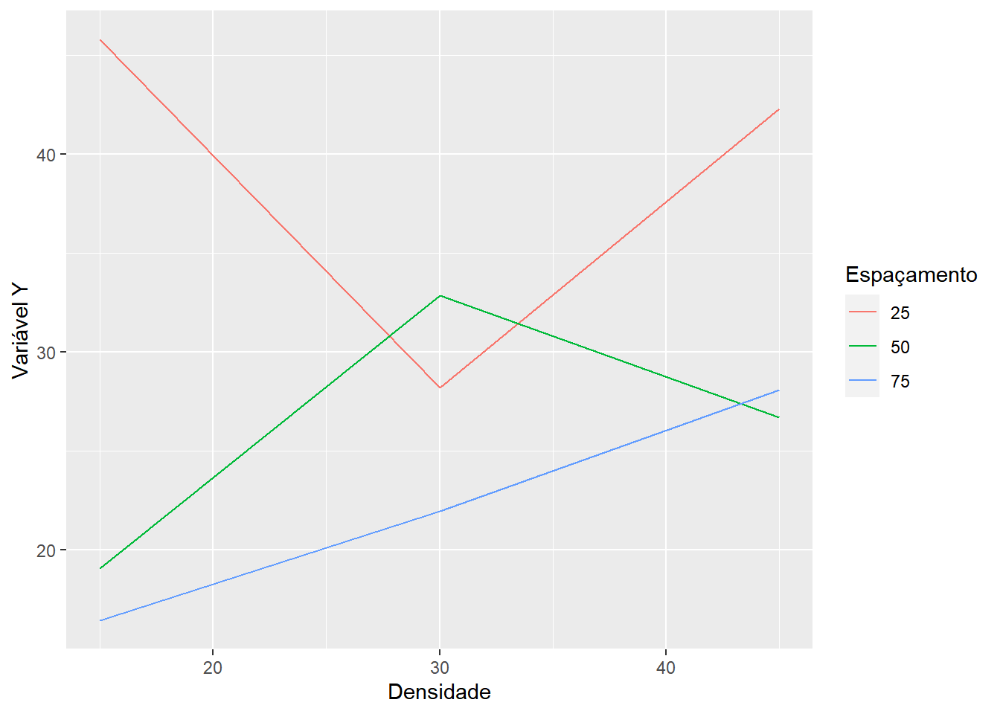

5 Estudo do Fatorial \(3^2\)
Nos experimentos fatoriais \(3^2\) ou \(3 \times 3\), temos 2 fatores, cada um dos quais ocorre em 3 níveis. Os tratamentos são formados pelas combinações dos 3 níveis dos 2 fatores, resultando em 9 tratamentos.
Como exemplo de um ensaio fatorial \(3^2\), vamos utilizar os dados obtidos do trabalho de graduação intitulado “Efeitos do espaçamento e da densidade de semeadura na produção de massa verde e matéria seca em diferntes épocas e, na produção de sementes da cultura Crotalaria juncea L.”, realizado por LAMERS (1981). Neste trabalho, foram utilizado 3 espaçamentos entre linhas (25 cm, 50 cm e 75 cm) e 3 densidade de plantas por metro linear (15, 30 e 45 plantas por metro linear). O delineamento foi instalado em blocos casualizados com 3 repetições, e os dados obtidos para produção de massa verde (t/ha), 139 dias após a semeadura, foram os seguintes:
| Espaçamento | Densidade | Bloco 1 | Bloco 2 | Bloco 3 | Totais |
|---|---|---|---|---|---|
| 25 | 15 | 46,82 | 30,705 | 59,77 | 137,295 |
| 25 | 30 | 31,04 | 28,41 | 25,1 | 84,55 |
| 25 | 45 | 47,325 | 50,445 | 29,01 | 126,78 |
| 50 | 15 | 26,3875 | 15,61 | 15,12 | 57,1175 |
| 50 | 30 | 32,765 | 33,615 | 32,115 | 98,495 |
| 50 | 45 | 37,455 | 21,4125 | 21,21 | 80,0775 |
| 75 | 15 | 12,6116 | 10,4015 | 26,2095 | 49,2226 |
| 75 | 30 | 23,4776 | 24,1842 | 18,1548 | 65,8166 |
| 75 | 45 | 26,3297 | 24,0652 | 33,8482 | 84,2431 |
| Totais | 284,2114 | 238,8484 | 260,5375 | 783,5973 |
os dados estão disponíveis online em: crotalaria.txt.
Aplicação em R - Fatorial com Interação Significativa

Utilizando as funções básicas e o pacote agricolae
# Carregando o pacote para análise de variância
library(agricolae)
library(tidyverse)
# Definindo o caminho do banco de dados
caminho<-"https://raw.githubusercontent.com/arpanosso/curso_GIEU/master/dados/crotalaria.txt"
# Entrada da dados
dados<-read.table(caminho,h=TRUE)
#Guardando os fatores e a variável resposta (y)
esp<-as.factor(dados$Espaçamento)
den<-as.factor(dados$Densidade)
bloco<-as.factor(dados$Bloco)
y<-dados$y
# Gráfico da interação
dados %>%
group_by(Espaçamento,Densidade) %>%
summarise(Y = mean(y)) %>%
ggplot(aes(x=Espaçamento, y=Y,col=as.factor(Densidade)))+
geom_line()+
labs(x="Espaçamento",y="Variável Y",col="Densidade")## `summarise()` regrouping output by 'Espaçamento' (override with `.groups` argument)
dados %>%
group_by(Espaçamento,Densidade) %>%
summarise(Y = mean(y)) %>%
ggplot(aes(x=Densidade, y=Y,col=as.factor(Espaçamento)))+
geom_line()+
labs(x="Densidade",y="Variável Y",col="Espaçamento")## `summarise()` regrouping output by 'Espaçamento' (override with `.groups` argument) Analise considerando o delineamento de tratamentos
## Analysis of Variance Table
##
## Response: y
## Df Sum Sq Mean Sq F value Pr(>F)
## den 2 150.53 75.26 1.1416 0.341378
## esp 2 1347.49 673.75 10.2191 0.001083 **
## den:esp 4 860.09 215.02 3.2614 0.035405 *
## Residuals 18 1186.75 65.93
## ---
## Signif. codes: 0 '***' 0.001 '**' 0.01 '*' 0.05 '.' 0.1 ' ' 1Medias dos efeitos principais e da interação
## Tables of means
## Grand mean
##
## 29.02222
##
## den
## den
## 15 30 45
## 27.07 27.65 32.34
##
## esp
## esp
## 25 50 75
## 38.74 26.19 22.14
##
## den:esp
## esp
## den 25 50 75
## 15 45.77 19.04 16.41
## 30 28.18 32.83 21.94
## 45 42.26 26.69 28.08SE A INTERAÇÃO FOR SIGNIFICATIVA
Desdobramento de Doses dentro Inseticidas
# Redefinindo o modelo para o estudo das interações
modab <- aov(y~esp/den) # Colocar os Controles locais, blocos, se for o caso
effects(modab)## (Intercept) esp50 esp75 esp25:den30 esp50:den30 esp75:den30
## -150.8038903 -10.4140056 -35.2000113 22.3858222 -14.0935810 0.4320422
## esp25:den45 esp50:den45 esp75:den45
## 4.2927308 9.3733807 -14.2964469 -14.6589072 -4.4221698 8.5114134
##
## -3.6891278 0.2827470 -6.8232618 -2.1185369 -0.8663283 -1.0888551
##
## 14.4060928 -7.7321698 -12.9235866 -4.1791278 -1.2172530 -7.0262618
##
## 13.6894631 -6.8953283 8.6941449
## attr(,"assign")
## [1] 0 1 1 2 2 2 2 2 2
## attr(,"class")
## [1] "coef"## esp25:den30 esp50:den30 esp75:den30 esp25:den45 esp50:den45 esp75:den45
## 22.3858222 -14.0935810 0.4320422 4.2927308 9.3733807 -14.2964469## Df Sum Sq Mean Sq F value Pr(>F)
## esp 2 1347.5 673.7 10.219 0.00108 **
## esp:den 6 1010.6 168.4 2.555 0.05730 .
## esp:den: Esp25 2 519.6 259.8 3.940 0.03808 *
## esp:den: Esp50 2 286.5 143.2 2.173 0.14281
## esp:den: Esp75 2 204.6 102.3 1.551 0.23899
## Residuals 18 1186.7 65.9
## ---
## Signif. codes: 0 '***' 0.001 '**' 0.01 '*' 0.05 '.' 0.1 ' ' 1Desdobramento de Inseticida dentro de Dose
# Redefinindo o modelo para o estudo das interações
modba <- aov(y~den/esp) # Colocar os Controles locais, blocos, se for o caso
effects(modba)## (Intercept) den30 den45 den15:esp50 den30:esp50 den45:esp50
## -150.8038903 5.0369674 -11.1873721 17.0372665 -10.9891465 11.9894669
## den15:esp75 den30:esp75 den45:esp75
## 35.9548352 7.6477152 17.3656575 -13.4015598 -0.8481823 7.8234798
##
## -5.2203439 0.1202090 -9.6712262 -3.3867486 0.9615199 -3.4279641
##
## 15.6634402 -4.1581823 -13.6115202 -5.7103439 -1.3797910 -9.8742262
##
## 12.4212514 -5.0674801 6.3550359
## attr(,"assign")
## [1] 0 1 1 2 2 2 2 2 2
## attr(,"class")
## [1] "coef"## den15:esp50 den30:esp50 den45:esp50 den15:esp75 den30:esp75 den45:esp75
## 17.037266 -10.989146 11.989467 35.954835 7.647715 17.365658## Df Sum Sq Mean Sq F value Pr(>F)
## den 2 150.5 75.3 1.142 0.341378
## den:esp 6 2207.6 367.9 5.581 0.002021 **
## den:esp: Den15 2 1583.0 791.5 12.005 0.000487 ***
## den:esp: Den30 2 179.2 89.6 1.359 0.281954
## den:esp: Den45 2 445.3 222.7 3.377 0.056832 .
## Residuals 18 1186.7 65.9
## ---
## Signif. codes: 0 '***' 0.001 '**' 0.01 '*' 0.05 '.' 0.1 ' ' 1Utilizando o pacote ExpDes.pt, mais prático
# Carregando o pacote par análise de variância
library(ExpDes.pt)
caminho<-"https://raw.githubusercontent.com/arpanosso/curso_GIEU/master/dados/crotalaria.txt"
d<-read.table(caminho,h=TRUE)
esp<-factor(d$Espaçamento)
den<-factor(d$Densidade)
bloco<-factor(d$Bloco)
y<-d$y
fat2.dbc(esp,den,bloco,y,fac.names = c("Espaçamento", "Densidade"))## ------------------------------------------------------------------------
## Legenda:
## FATOR 1: Espaçamento
## FATOR 2: Densidade
## ------------------------------------------------------------------------
##
##
## Quadro da analise de variancia
## ------------------------------------------------------------------------
## GL SQ QM Fc Pr>Fc
## Bloco 2 114.4 3 0.8535 0.44444
## Espaçamento 2 1347.5 5 10.0527 0.00149
## Densidade 2 150.5 6 1.1230 0.34964
## Espaçamento*Densidade 4 860.1 2 3.2083 0.04101
## Residuo 16 1072.3 4
## Total 26 3544.9 1
## ------------------------------------------------------------------------
## CV = 28.21 %
##
## ------------------------------------------------------------------------
## Teste de normalidade dos residuos (Shapiro-Wilk)
## valor-p: 0.541538
## De acordo com o teste de Shapiro-Wilk a 5% de significancia, os residuos podem ser considerados normais.
## ------------------------------------------------------------------------
##
##
##
## Interacao significativa: desdobrando a interacao
## ------------------------------------------------------------------------
##
## Desdobrando Espaçamento dentro de cada nivel de Densidade
## ------------------------------------------------------------------------
## ------------------------------------------------------------------------
## Quadro da analise de variancia
## ------------------------------------------------------------------------
## GL SQ QM Fc Pr.Fc
## Bloco 2 114.4004 57.20020 0.8535 0.4444
## Densidade 2 150.5283 75.26417 1.123 0.3496
## Espaçamento:Densidade 15 2 1583.0186 791.50931 11.8098 7e-04
## Espaçamento:Densidade 30 2 179.2489 89.62444 1.3372 0.2904
## Espaçamento:Densidade 45 2 445.3134 222.65669 3.3222 0.0621
## Residuo 16 1072.3451 67.02157
## Total 26 3544.8547 136.34057
## ------------------------------------------------------------------------
##
##
##
## Espaçamento dentro do nivel 15 de Densidade
## ------------------------------------------------------------------------
## Teste de Tukey
## ------------------------------------------------------------------------
## Grupos Tratamentos Medias
## a 1 45.765
## b 2 19.03933
## b 3 16.408
## ------------------------------------------------------------------------
##
##
## Espaçamento dentro do nivel 30 de Densidade
##
## De acordo com o teste F, as medias desse fator sao estatisticamente iguais.
## ------------------------------------------------------------------------
## Niveis Medias
## 1 1 28.18333
## 2 2 32.83167
## 3 3 21.93900
## ------------------------------------------------------------------------
##
##
## Espaçamento dentro do nivel 45 de Densidade
##
## De acordo com o teste F, as medias desse fator sao estatisticamente iguais.
## ------------------------------------------------------------------------
## Niveis Medias
## 1 1 42.26000
## 2 2 26.69267
## 3 3 28.08100
## ------------------------------------------------------------------------
##
##
##
## Desdobrando Densidade dentro de cada nivel de Espaçamento
## ------------------------------------------------------------------------
## ------------------------------------------------------------------------
## Quadro da analise de variancia
## ------------------------------------------------------------------------
## GL SQ QM Fc Pr.Fc
## Bloco 2 114.4004 57.20020 0.8535 0.4444
## Espaçamento 2 1347.4923 673.74615 10.0527 0.0015
## Densidade:Espaçamento 25 2 519.5526 259.77629 3.876 0.0424
## Densidade:Espaçamento 50 2 286.4893 143.24465 2.1373 0.1504
## Densidade:Espaçamento 75 2 204.5751 102.28753 1.5262 0.2474
## Residuo 16 1072.3451 67.02157
## Total 26 3544.8547 136.34057
## ------------------------------------------------------------------------
##
##
##
## Densidade dentro do nivel 25 de Espaçamento
## ------------------------------------------------------------------------
## Teste de Tukey
## ------------------------------------------------------------------------
## Grupos Tratamentos Medias
## a 1 45.765
## ab 3 42.26
## b 2 28.18333
## ------------------------------------------------------------------------
##
##
## Densidade dentro do nivel 50 de Espaçamento
##
## De acordo com o teste F, as medias desse fator sao estatisticamente iguais.
## ------------------------------------------------------------------------
## Niveis Medias
## 1 1 19.03933
## 2 2 32.83167
## 3 3 26.69267
## ------------------------------------------------------------------------
##
##
## Densidade dentro do nivel 75 de Espaçamento
##
## De acordo com o teste F, as medias desse fator sao estatisticamente iguais.
## ------------------------------------------------------------------------
## Niveis Medias
## 1 1 16.408
## 2 2 21.939
## 3 3 28.081
## ------------------------------------------------------------------------